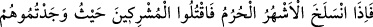
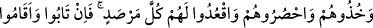
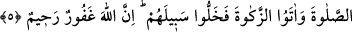
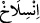

İslâm’ı ümmetinin kalbinde tatlı kıldım da onu sevdiler. Küfrü de kalblerinde acı
kıldım ki ondan nefret etsinler.”
Fakir (Bursevî) der ki: Buradan anlaşılıyor ki: Allah Teâlâ, ümmet-i dâvetin
(müslüman olmayanların) kalbinde küfrü tatlı kıldı ki onu sevdiler. İmanı da acı kıldı ki
ondan nefret ettiler. İmanı sevmek, ilâhî cezbenin ve ezelî inâyetin bir eseridir. İşte
mümin böylece inkârdan, isyandan, cehâletten, mâsivâyı görüp ona meyletmekten
korunur.
Ey îman sahipleri, size umûmî inayet erişti. Ey irfan ehli, size de husûsî hidayet
cezbedip kendisine çekti. Artık kalkın size olan nimetlerine ve engin kereminden
bahşettiklerine karşılık Allah Teâlâ’ya şükürde bulunun.
Âyette Allah müttakîleri sevdiğini açıkça bildirmiştir. Bazan sen seven (muhib) O
sevilen (Mahbûb) olur, bazan da sen sevilen (mahbûb) O seven (Muhib) olur.
Mahbûbiyet (Allah tarafından sevilme) makamı en üstün mertebedir. Bunun üstünde bir
mertebe olmuş olsaydı Rasûlullah (s.a.)’e “Habîbullah”, yâni “Allah’ın sevgilisi”
denilmezdi.
Artık ey akıl sahibi! Ecel gelip ömür bitmeden, korkaklık ve tembellik gibi engeller
etrafını kuşatmadan Rabb’ine dön. İsteyerek yapılan bir şey zorunlu olarak yapılandan
daha makbuldür. O’na yönelirsen o vaktin saadeti sanadır. Yüz çevirirsen şakavete ve
gazaba dûçar olursun. Allah Teâlâ’dan bizi rızâ yoluna iletmesini ve geçmiş
hatalarımızı silmesini niyaz ederiz. Âmîn
5. Haram aylar çıkınca müşrikleri bulduğunuz yerde öldürün, onları yakalayın,
hapsedin ve her gözetleme yerinde oturup bekleyin. Eğer tevbe eder, namazı
dosdoğru kılar, zekatı da verirlerse artık yollarını serbest bırakın. Allah bağışlayan,
esirgeyendir.
“Haram aylar çıkınca” yâni geçince…
“çıkmak” diye tercüme edilen “” kelimesi hayvanın derisinin vücudundan
soyulması (yüzülmesi) anlamında kullanılır. Burada istiâre yoluyla müddetin bitmesi
mânâsı kastedilmiştir. Tıpkı örtünün kalkıp arkasındakilerin ortaya çıkması gibi. İşin
aslı şudur: Zaman, kendisinde ve kendisiyle ilgili olan hususları kuşatır ve derinin
hayvanı kapladığı gibi onları kaplar. Zamanın gün, ay ve yıllar gibi dilimleri de